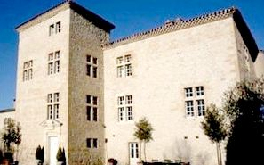
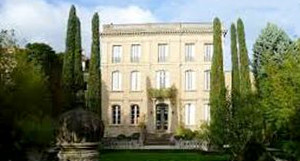
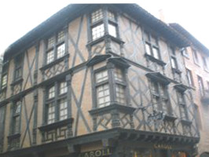
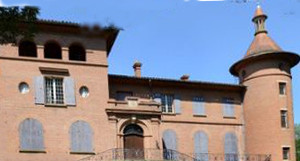
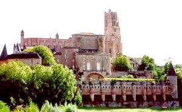
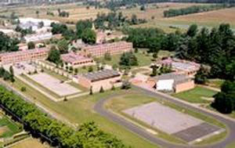
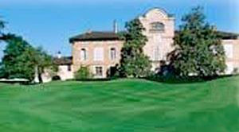
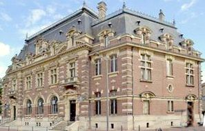

Recensement Jean-Claude Truffet
| Département | 81 — Tarn |
| Canton | Albi |
| Commune | Albi |
| Type d'édifice | Château |
| Période d'origine | XV-XVIII |








Cinq châteaux à Albi, celui de Cantespeau du XV-XVII siècle (voir article), celui de Fonlabour du XVIIIe siècle abrite aujourd'hui un lycée, celui de Gô du XVI-XVIIe siècle (voir article), château de Lasbordes du XVIIIe siècle club housse de golf et manoir de Lasbordes du XVII-XIXe siècle le Bellevue et le palais de la Berbie (voir article). FONLABOUR, à partir de son plus ancien bâtiment : le château, qui abrite aujourd'hui le CDI. Les élèves se sont plus particulièrement intéressés à la période de 1948 à 1966, durant laquelle l'Ecole d'enseignement ménager agricole du Tarn a occupé ce bâtiment. Puis, l'école a cédé la place en 1966 au collège et au lycée. Pas d'information historique. LABORDES, en 1563, lors de la première mention concernant le domaine, la terre dénommée alors "Pruines" appartenait à un chanoine du chapitre de Sainte-Cécile d'Albi, de la famille toulousaine des Barassy, il légua la propriété à sa sur, dont le fils la légua à ses neveux d'Aussaguel, négociants albigeois. Le château fut bâti à la fin du grand siècle par Raymond d'Aussaguel dans un style noble que rend plus aimable l'emploi de la chaude brique de la région. Manoir de Lasbordes, façades et toitures escalier intérieur avec sa rampe à balustres , ancien grenier, séchoir à pastel., avec deux pigeonniers. Le bâtiment de la caisse d'épargne néo-renaissance fut inauguré en 1913, c'est l'architecte départemental Léon Daures, natif de Mazamet, qui l'a conçu. Il est imposant et rassurant, construit en brique et pierre blanche. Les ouvertures et la modénature sont un parfait rappel de la Renaissance. Les frontons, les fenêtres à meneaux, les mansardes sur le toit en ardoise sont typiques et il y a même une balustre en haut du toit.
Fonlabour se présente comme un long bâtiment à un étage surmonté d'un attique et pourvu d'une travée centrale représentant la seule animation de cette façade régulière. Au rez-de-chaussée, cette travée présente, de chaque côté de la porte, un bossage en table et, à l'étage, de fins pilastres surmontés de chapiteaux corinthiens. La fenêtre de cette travée a reçu un fronton en segment de cercle. De même, au niveau de l'attique, un il-de-buf remplace, sur la travée centrale, les fenêtres carrées courant sous le toit. Un fronton couronne le toit, venant interrompre la monotonie de cette longue horizontale. Au XVIIIe siècle la demeure bâtie en brique, ce beau bâtiment porte les stigmates de mauvais travaux effectués au XIXe siècle, dont le balcon vaguement néo-gothique du premier étage ainsi que la porte et le lugubre enduit de façade, constituent les principaux éléments. Sur la façade arrière, une grosse tour engagée s'arrêtant à hauteur de la toiture atteste d'une origine du château bien antérieure aux affligeants travaux de la fin du siècle passé. Le Gô s'organise autour d'une cour en U, fermée sur le quatrième côté par un mur bas percé d'une porte cochère, son état d'origine conserve des portes à accolade d'un style tardif et des meneaux très simples. L'ensemble du bâtiment a été traité dans le style rustique et de bon aloi qui sied à une "maison des champs". La cour étant orientée au nord la partie la plus ancienne est l'aile sud avec l'escalier à vis, l'aile Est datant bien du XVIIe siècle, et l'aile ouest aurait été refaite au XIXe siècle pour conserver ce plan régulier. Labordes, corps de logis simple dont les salles prennent le jour sur deux façades présentant neuf travées d'ouvertures, il est édifié sur un plan rectangulaire et orné d'un corps central non saillant. Les fenêtres, encore traitées à meneaux malgré l'époque de la construction, ont été remaniées au XIXe siècle. Le pavillon central coiffé d'un belvédère à fronton semi-circulaire souligné par une corniche, seul élément décoratif de la façade. De belles cheminées anciennes décorent encore l'intérieur du château.
Famille de Raymond d'Aussaguel
"
Divers châteaux à Albi celui de Fonlabour, de Lasbordes, du Go, de Bellevue, la Berbie et maison renaissance;